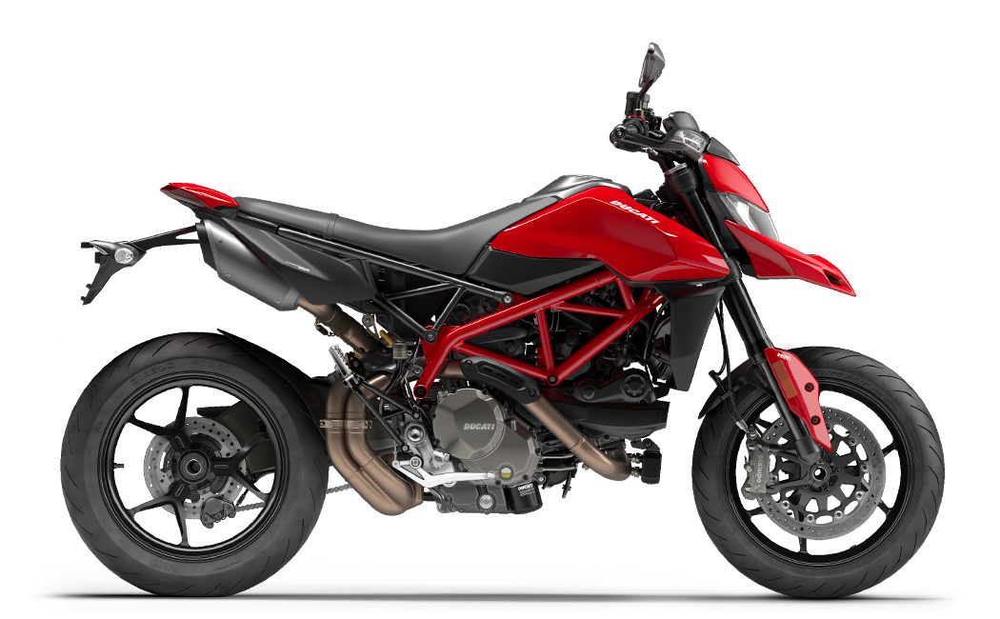

DUCATI HYPERMOTARD 950

Általános adatok:
- Évjárat: 2023
- Kivitel: Supermoto
Jármű adatok:
- Szállítható személyek: 2 fő
- Saját tömeg: 178 kg
Motor adatok:
- Üzemanyag: Benzin
- Hengerűrtartalom: 937 ccm
- Teljesítmény: 85 kW, 116 LE
- Munkaütem: 4
- Hengerek száma: 2
- Henger-elrendezés: V
- Hűtés: Víz
- Hajtás: Lánc
- Sebességváltó: Szekvenciális (6 fokozatú)
Műszaki:
- ABS (blokkolásgátló)
- DTC
- Fém fékcső
- Fordulatszámmérő
- Immobiliser
- Önindító
- Fedélzeti computer
- Tárcsafék hátul
- Dupla tárcsafék elöl
- Katalizátor
Vissza